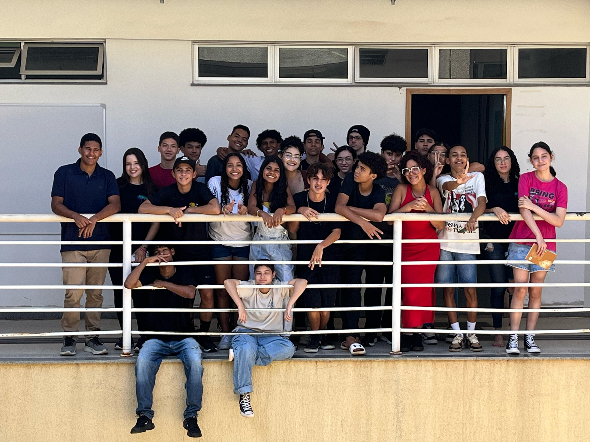

D.S.M.A.
Diretoria de Saúde e Meio Ambiente
Grêmio Estudantil do IFG campus Valparaíso
Home
Sobre
Entre em contato

Saúde e Meio Ambiente
Dois corações
Um só pulso
Nossos Projetos
somos a
Diretoria de Saúde e Meio Ambiente